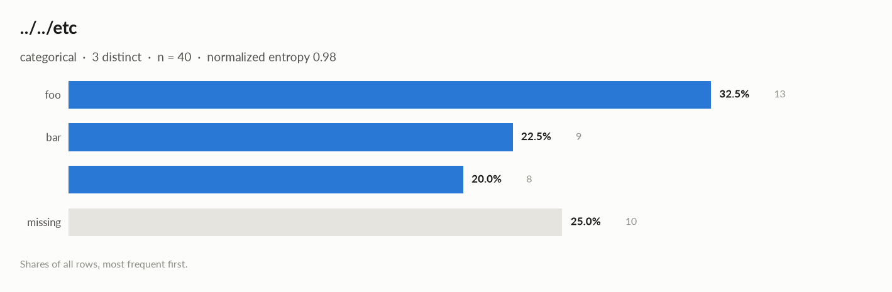

elessar report
40 rows × 1 columns · pandas.DataFrame · read in 0.0s · generated 2026-10-28 11:02 by elessar 0.3.0
Key findings
- MEDIUM 36 duplicate rows (90.0%), e.g. index ['r3', 'r4', 'r5'] -> df.drop_duplicates()
- MEDIUM
../../etc: 25.0% missing -> drop, or impute and add a missing-indicator - MEDIUM
../../etc: placeholder values used as missing: '' (8) -> replace with NaN
Overall statistics
| Rows | 40 |
| Columns | 1 |
| Memory | 1.8 KB |
| Potential saving | 320 B |
| Pandas dtypes | string=1 |
| Semantic types | categorical=1 |
| Duplicate rows | 36 (90.0%) |
| Missing cells | 25.0% |
| Target | ../../etc |
Categorical columns at a glance
| column | type | count | missing | distinct | most frequent | share | entropy |
|---|
../../etc | categorical | 30 | 25.0% | 3 | foo | 43.3% | 0.979 |
Target analysis
Target: ../../etc (categorical)
Data quality
| severity | column | message |
|---|
| medium | - | 36 duplicate rows (90.0%), e.g. index ['r3', 'r4', 'r5'] -> df.drop_duplicates() |
| medium | ../../etc | 25.0% missing -> drop, or impute and add a missing-indicator |
| medium | ../../etc | placeholder values used as missing: '' (8) -> replace with NaN |
| info | - | dtype optimizations save ~320 B: ../../etc -> category (see quality['dtype_optimizations'] for code) |
Memory: suggested dtypes save 320 B
| column | current | suggested | saving | code |
|---|
../../etc | string | category | 320 B (82%) | df['../../etc'] = df['../../etc'].astype('category') |
Multivariate statistics
Dimensionality reduction
PCA not applicable: needs at least 3 numeric columns and enough rows (0 columns, 40 rows)
Associations between columns
Preparation plan
Cleaning: invalid values 1, wrong formats 1, duplicates 1. Transformation: .
Cleaning
| action | column | why | code |
|---|
| Invalid values | ../../etc | placeholders used as missing: '' ×8 | df['../../etc'] = df['../../etc'].replace([''], np.nan) |
| Wrong formats | ../../etc | should-be-category | df['../../etc'] = df['../../etc'].astype('category') |
| Duplicates | - | 36 duplicate rows (90.0%) | df = df.drop_duplicates() |
Attribute statistics
| column | type | missing | distinct | alerts |
|---|
../../etc | categorical | 25.0% | 3 | 0 |
../../etc · categorical
string · 3 distinct labels
Profile
| type | categorical |
| dtype | string |
| values | 30 |
| missing | 10 (25.0%) |
| distinct | 3 (10.0%) |
| memory | 391 B |
| mode | foo ×13 |
Labels
| cardinality | 3 |
| entropy | 1.55 bits (0.98 of max) |
| Gini impurity | 0.651 |
| imbalance | ×1.625 |
| rare labels | 0 (0.0% of rows) |
| uniform? chi² | p 0.5 |
Most frequent values
| value | count | share |
|---|
foo | 13 | 43.3% |
bar | 9 | 30.0% |
| 8 | 26.7% |
- should-be-category:
df['../../etc'] = df['../../etc'].astype('category')

Run
| Source | pandas.DataFrame · read in 0.0s |
| Processes | 1 for the analysis, 3 for the charts (14 cores available) |
| Time | 0.6s (load 0.0s, columns 0.0s, associations 0.0s, quality 0.0s, charts 0.4s) |
| Significance | alpha 0.05, Benjamini-Hochberg false discovery rate per family of tests |
| Versions | elessar 0.3.0 · Python 3.12.14 · pandas 3.1.0 · numpy 2.5.4 · scipy 1.18.1 |